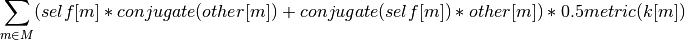

pmesh.pm module¶
-
class
pmesh.pm.BaseComplexField(pm, base=None)[source]¶ Bases:
pmesh.pm.Field-
apply(func, kind='wavenumber', out=None)[source]¶ apply a function to the field, in-place.
Parameters: - func : callable
func(k, y) where k is a list of k values that broadcasts into a full array. value of k depends on kind. y is the corrsponding value of field.
y is the value of the field on the corresponding locations.
k.normp(p=2, zeromode=1) would return |k|^2 but set the zero mode (r == 0) to 1.
- kind : string
The kind of value in k. ‘wavenumber’ means wavenumber from [- 2 pi / L * N / 2, 2 pi / L * N / 2). ‘circular’ means circular frequency from [- pi, pi). ‘index’ means [0, Nmesh )
-
cdot(other, metric=None)[source]¶ Collective inner product between the independent modes of two Complex Fields.
The real part of the result is effectively self.c2r().cdot(other.c2r()) / Nmesh.prod().
FIXME: what does the imag part mean?
Parameters: - other : ComplexField
the other field for the inner product
- metric: callable
metric(k) gives the metric of each mode.
-
cdot_vjp(v, metric=None)[source]¶ backtrace gradient of cdot against other. This is a partial gradient. This is currently only correct for cdot().real.
-
cnorm(metric=None, norm=<function BaseComplexField.<lambda>>)[source]¶ compute the norm collectively. The conjugates are added too.
This is effectively cdot(self).
NORM = Self-conj + lower + upper

-
-
pmesh.pm.ComplexField¶ alias of
pmesh.pm.TransposedComplexField
-
class
pmesh.pm.Field(pm, base=None)[source]¶ Bases:
numpy.lib.mixins.NDArrayOperatorsMixinBase class for RealField and ComplexField.
It only supports those two subclasses.
-
cast(type, out=None)[source]¶ cast the field object to the given type, maintaining the meaning of the field.
-
csetitem(index, y)[source]¶ get a value from absolute index collectively. maintains Hermitian conjugation. Returns the actually value that is set.
-
preview(Nmesh=None, axes=None, resampler=None, method=None)[source]¶ gathers the mesh into as a numpy array, with (reduced resolution).
The result is broadcast to all ranks, so this uses Nmesh.prod() per rank if all axes are preserved.
Parameters: - Nmesh : int, array_like, None
The desired Nmesh of the result. Be aware this function allocates memory to hold A full Nmesh on each rank. None will not resample Nmesh.
- axes : list or None
list of axes to preserve.
- method : string “upsample” or “downsample”, or None
upsample is like subsampling (faster) when Nmesh is lower resolution. if None, use upsample for upsampling (Nmesh >= self.Nmesh) and downsample for down sampling.
Returns: - out : array_like
An numpy array for the real density field.
-
ravel(out=None)[source]¶ Ravel the field to ‘C’-order, partitioned by MPI ranks. Save the result to flatiter.
Parameters: - out : numpy.flatiter, or Ellipsis for inplace
A flatiter to store the ‘C’ order. If not a flatiter, the .flat attribute is used.
Returns: - numpy.flatiter : the flatiter provided or created.
Notes
Set out to or Ellisps self.value for an ‘inplace’ ravel.
-
resample(out)[source]¶ Resample the Field by filling 0 or truncating modes. Convert from and between Real/Complex automatically.
Parameters: - out : Field
must be provided because it is a different PM. Can be RealField or (Tranposed/Untransposed)ComplexField
-
slabs¶
-
-
class
pmesh.pm.ParticleMesh(Nmesh, BoxSize=1.0, comm=None, np=None, dtype='f8', plan_method='estimate', resampler='cic')[source]¶ Bases:
objectParticleMesh provides an interface to solver for forces with particle mesh method
ParticleMesh does not deal with memory. Use RealField(pm) and ComplexField(pm) to create memory buffers.
Attributes: - np : array_like (npx, npy)
The shape of the process mesh. This is the number of domains per direction. The product of the items shall equal to the size of communicator. For example, for 64 rank job, np = (8, 8) is a good choice. Since for now only 3d simulations are supported, np must be of length-2. The default is try to split the total number of ranks equally. (eg, for a 64 rank job, default is (8, 8)
- comm :
MPI.Comm the MPI communicator, (default is MPI.COMM_WORLD)
- Nmesh : array of int
number of mesh points per side. The length decides the number of dimensions.
- dtype : dtype
dtype of the buffers; if a complex dtype is given, the transforms will be c2c. the type of fields are still ‘RealField’ and ‘ComplexField’, though the RealField is actually made of complex numbers, and the ComplexField is no longer hermitian compressed.
- BoxSize : float
size of box
- domain :
pmesh.domain.GridND domain decomposition (private)
- partition :
pfft.Partition domain partition (private)
- w : list
a list of the circular frequencies along each direction (-pi to pi)
- k : list
a list of the wave numbers k along each direction (- pi N/ L to pi N/ L)
- x : list
a list of the position along each direction (-L/2 to L/ 2). x is conjugate of k.
- r : list
a list of the mesh position along each direction (-N/2 to N/2). r is conjugate of w.
-
create(type=None, base=None, value=None, mode=None)[source]¶ Create a field object.
Parameters: - type: string, or type
‘real’, ‘complex’, ‘untransposedcomplex’, RealField, ComplexField, TransposedComplexField, UntransposedComplexField
- base : object, None
Reusing the base attribute (physical memory) of an existing field object. Provide the attribute, not the field object. (obj._base not obj)
- value : array_like, None
initialize the field with the values.
-
create_coords(field_type, return_indices=False)[source]¶ Create coordinate arrays. If return_indices is True, return the integer indices instead.
Returns: - x : (when return_indices is False) list of arrays, broadcastable to the right shape of the field;
distance or wavenumber; between negative and positive.
- i : (when return_indices is True) list of arrays, integers (ranging from 0 to Nmesh)
-
decompose(pos, smoothing=None, transform=None)[source]¶ Create a domain decompose layout for particles at given coordinates.
Parameters: - pos : array_like (, ndim)
position of particles in simulation unit
- smoothing : None, float, array_like, string, or ResampleWindow
if given as a string or ResampleWindow, use 0.5 * support. This is the size of the buffer region around a domain. Default: None, use self.resampler
Returns: - layout : :py:class:domain.Layout
layout that can be used to migrate particles and images
- to the correct MPI ranks that hosts the PM local mesh
-
downsample(source, resampler=None, keep_mean=False)[source]¶ Resample an image with the downsample method.
Downsampling paints the value of image at the pixel positions source.
Parameters: - source : RealField
the source image
- keep_mean : bool
if True, conserves the mean rather than the total mass in the overlapped region.
Returns: - A new RealField.
Notes
Note that kernels do not conserve total mass or mean exactly by construction due to the sparse sampling, this is particularly bad for lanzcos, db, and sym.
some tests are shown in https://github.com/rainwoodman/pmesh/pull/22
-
generate_uniform_particle_grid(shift=0.5, dtype=None, return_id=False)[source]¶ create uniform grid of particles, one per grid point, in BoxSize coordinate.
Parameters: - shift : float, array_like
shifting the grid by this much relative to the size of each grid cell. if array_like, per direction.
- dtype : dtype, or None
dtype of the return value; default the same precision as the pm.
- return_id : boolean
if True, return grid, id; id is the unique integer ID of this grid point. it is between 0 and total number of grid points (exclusive).
- Returns:
grid : array_like (N, ndim) id : array_like (N)
-
generate_whitenoise(seed, unitary=False, mean=0, type=<class 'pmesh.pm.TransposedComplexField'>, mode=None, base=None)[source]¶ Generate white noise to the field with the given seed.
The scheme is supposed to be compatible with Gadget when the field is three-dimensional.
Parameters: - seed : int
The random seed
- mean : float
the mean of the field
- unitary : bool
True to generate a unitary white noise where the amplitude is fixed to 1 and only the phase is random.
-
paint(pos, hsml=None, mass=1.0, resampler=None, transform=None, hold=False, gradient=None, layout=None, out=None)[source]¶ Paint particles into the internal real canvas.
Transform the particle field given by pos and mass to the overdensity field in fourier space and save it in the internal storage. A multi-linear CIC approximation scheme is used.
The function can be called multiple times: the result is cummulative. In a multi-step simulation where
ParticleMeshobject is reused, before callingpaint(), make sure the canvas is cleared withclear().Parameters: - pos : array_like (, ndim)
position of particles in simulation unit
- hsml : array_like (, ndim)
scaling of the resampling window per particle; or None for the kernel intrinsic size. (dimensionless)
- mass : scalar or array_like (,)
mass of particles in simulation unit
- hold : bool
If true, do not clear the current value in the field.
- gradient : None or integer
Direction to take the gradient of the window. The affine transformation is properly applied.
- resampler: None or string
type of window. Default : None, use self.pm.resampler
- layout : Layout
domain decomposition to use for the readout. The position is first routed to the target ranks and the result is reduced
Notes
the painter operation conserves the total mass. It is not the density.
-
paint_jvp(pos, mass=1.0, v_pos=None, v_mass=None, resampler=None, transform=None, gradient=None, layout=None, out=None)[source]¶ A_q = W_qi M_i
-
paint_vjp(v, pos, mass=1.0, resampler=None, transform=None, gradient=None, out_pos=None, out_mass=None, layout=None)[source]¶ back-propagate the gradient of paint from v.
Parameters: - layout : Layout
domain decomposition to use for the readout. The position is first routed to the target ranks and the result is reduced
- out_mass: array , None, or False
stored the backtraced gradient against mass
if False, then the gradient against mass is not computed. if None, a new RealField is created and returned
- out_pos : array, None or False
store the backtraced graident against pos
if False, then the gradient against pos is not computed. if None, a new array is created and returned
-
partition¶
-
reshape(Nmesh=None, BoxSize=None)[source]¶ Create a reshaped ParticleMesh object, changing the resolution Nmesh, or even dimension.
Parameters: - Nmesh : int or array_like or None
The new resolution
Returns: - A ParticleMesh of the given resolution and transpose property
-
respawn(comm, np=None)[source]¶ Create a new ParticleMesh object with the same geometry but on a new communicator.
Parameters: - comm : MPI.Comm
the new communicator
- np : list or int
the process mesh topology
Returns: - A new ParticleMesh on the given communicator;
Notes
Usually the communicator shall be a subcommunicator of self.comm, because otherwise there is no way to correctly make a barrier.
-
unravel(type, flatiter)[source]¶ Unravel c-ordered field values.
Parameters: - type : type to unravel into, subclass of Field. (ComplexField, RealField, TransposedComplexField, UntransposedComplexField)
- flatiter : numpy.flatiter
Returns: - r : RealField or ComplexField
Notes
array does not have to be C_CONTIGUOUS, as the flat iterator of array is used.
-
upsample(source, resampler=None, keep_mean=False)[source]¶ Resample an image with the upsample method.
Upsampling reads out the value of image at the pixel positions of the pm.
Parameters: - source : RealField
the source image
- keep_mean : bool
if True, conserves the mean rather than the total mass in the overlapped region.
Returns: - A new RealField.
Notes
Note that kernels do not conserve total mass or mean exactly by construction due to the sparse sampling, this is particularly bad for lanzcos, db, and sym.
some tests are shown in https://github.com/rainwoodman/pmesh/pull/22
-
class
pmesh.pm.RealField(pm, base=None)[source]¶ Bases:
pmesh.pm.Field-
apply(func, kind='relative', out=None)[source]¶ apply a function to the field.
Parameters: - func : callable
func(r, y) where r is a list of r values that broadcasts into a full array. value of r depends on kind.
y is the value of the field on the corresponding locations.
r.normp(p=2, zeromode=1) would return |r|^2 but set the zero mode (r == 0) to 1.
- kind : string
The kind of value in r. ‘relative’ means distance from [-0.5 Boxsize, 0.5 BoxSize). ‘index’ means [0, Nmesh )
-
ctranspose(axes)[source]¶ Collectively Transpose a RealField. This does not change the representation but actually replaces the coordinates according to the new set of axes.
Notes
This is currently implemented very inefficiently, with readout and paint operations.
-
paint(pos, mass=1.0, resampler=None, transform=None, hold=False, gradient=None, layout=None)[source]¶
-
readout(pos, hsml=None, out=None, resampler=None, transform=None, gradient=None, layout=None)[source]¶ Read out from real field at positions
Parameters: - pos : array_like (, ndim)
position of particles in simulation unit
- hsml : array_like (, ndim)
scaling of the resampling window per particle; or None for the kernel intrinsic size. (dimensionless)
- out : array_like (, ndim)
output
- gradient : None or integer
Direction to take the gradient of the window. The affine transformation is properly applied.
- resampler : None or string
type of window, default to self.pm.resampler
- layout : Layout
domain decomposition to use for the readout. The position is first routed to the target ranks and the result is reduced
Returns: - rt : array_like (,)
read out values from the real field.
-
readout_jvp(pos, v_self=None, v_pos=None, resampler=None, transform=None, gradient=None, layout=None)[source]¶ f_i = W_qi A_q
-
readout_vjp(pos, v, resampler=None, transform=None, gradient=None, out_self=None, out_pos=None, layout=None)[source]¶ back-propagate the gradient of readout.
Returns a tuple of (out_self, out_pos), one of both can be False depending on the value of out_self and out_pos.
Parameters: - v: array
current gradient over the result of readout.
- layout : Layout
domain decomposition to use for the readout. The position is first routed to the target ranks and the result is reduced
- out_self: RealField, None, or False
stored the backtraced gradient against self
if False, then the gradient against self is not computed. if None, a new RealField is created and returned
- out_pos : array, None or False
store the backtraced graident against pos
if False, then the gradient against pos is not computed. if None, a new array is created and returned
-
-
class
pmesh.pm.TransposedComplexField(pm, base=None)[source]¶ Bases:
pmesh.pm.BaseComplexFieldA complex field with transposed representation. Faster for r2c/c2r but slower for whitenoise
-
class
pmesh.pm.UntransposedComplexField(pm, base=None)[source]¶ Bases:
pmesh.pm.BaseComplexFieldA complex field with untransposed representation. Faster for whitenoise, slower for r2c and c2r.
-
pmesh.pm.build_index(indices, fullshape)[source]¶ Build a linear index array based on indices on an array of fullshape. This is similar to numpy.ravel_multi_index.
index value of -1 will on any axes will be translated to -1 in the final.
- Parameters:
indices : a tuple of index per dimension.
fullshape : a tuple of the shape of the full array
- Returns:
- ind : a 3-d array of the indices of the coordinates in indices in
- an array of size fullshape. -1 if any indices is -1.
-
pmesh.pm.reindex(Nsrc, Ndest)[source]¶ returns the index in the frequency array for corresponding k in Nsrc and composes Ndest
For those Ndest that doesn’t exist in Nsrc, return -1
Example: >>> reindex(8, 4) >>> array([0, 1, 2, 7]) >>> reindex(4, 8) >>> array([ 0, 1, 2, -1, -1, -1, -1, 3])
-
class
pmesh.pm.slab(shape, dtype=float, buffer=None, offset=0, strides=None, order=None)[source]¶ Bases:
numpy.ndarray
-
class
pmesh.pm.xslabiter(axis, nslabs, optx)[source]¶ Bases:
pmesh.pm.slabiteriterating will yield the sparse coordinates of a list of slabs